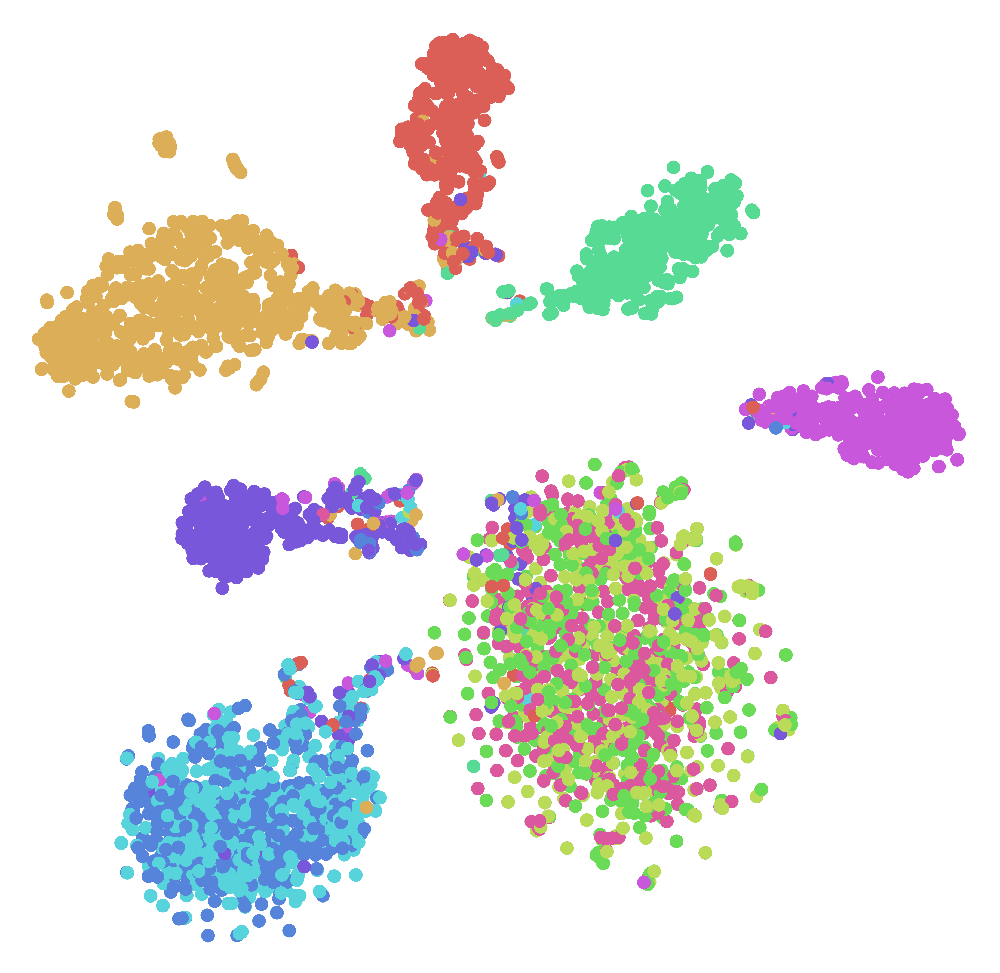

|
I received my Bachelor's degree with the highest distinction under the Turing Program at the National University of Singapore (NUS), double majoring in Computer Science and Statistics. I work at the intersection of robotics and machine learning, with the goal of enabling robots to act intelligently in the real world. Currently, I am working on visual-tactile perception for object manipulation at the Stanford Vision and Learning Lab (SVL), advised by Yunzhu Li and Jiajun Wu. Previously, I worked with David Hsu on low-level control and system architecture design for long-horizon visual navigation. In my earliest undergrad years, I explored video-based action recognition under Angela Yao. Email / Google Scholar / GitHub / LinkedIn |
|
|
Bo Ai, Zhanxin Wu, David Hsu Under review, 2023 Paper We believe inductive bias is key to generalization. This work examines, experimentally and theoretically, one representation that enables a visual navigation control policy solely trained in the Habitat simulator to generalize to novel real-world scenes, both indoor and outdoors. |
|
|
Zhanxin Wu, Bo Ai, David Hsu Robotics: Science and Systems (RSS) Workshop on Learning for Task and Motion Planning, 2023 Paper A framework that enables an agent to put out-of-place objects back in place with partial map information by exploiting commonsense knowledge in large language models (LLMs). |
|
|
Bo Ai, Wei Gao, Vinay, David Hsu International Conference on Robotics and Automation (ICRA), 2022 Project page / Paper / Demo / Code A learned controller that enables our Spot robot to navigate across varied environments with complex multimodal behaviors under partial observations. |
|

|
Bo Ai, Yuchen Wang, Yugin Tan, Samson Tan International Joint Conference on Natural Language Processing (IJCNLP), 2022 Paper / Talk / Code Contrastive learning enables learning author-specific representations, which in turn improves authorship identification performance. |
| Reviewer, RA-L, IROS 2023, ICRA 2023, IROS 2022, ICRA 2022 |
| NUS CS1101S Programming Methodology, Fall 2020 NUS CS3244 Machine Learning, Fall 2022 NUS CS5478 Intelligent Robots: Algorithms and Systems, Spring 2023 |
|
2023: Dean's List (5%), NUS School of Computing
2023: Global Young Scientists Summit 2023, Singapore National Research Foundation
2022: NUS Outstanding Undergraduate Research Prize (0.4%), NUS
2022: NUS School of Computing Innovation Prize (0.2%), NUS School of Computing & Singapore Computer Society
2022: Certificate of Distinction in AI, NUS School of Computing
2022: Certificate for Top Students x 2, NUS School of Computing
2021: Certificate for Top Students x 1, NUS School of Computing
2018: NUS Science and Technology Scholarship, NUS & Singapore Ministry of Education
|
|
Template from Jon Barron. Last updated: July 2023 |
{kind=link}